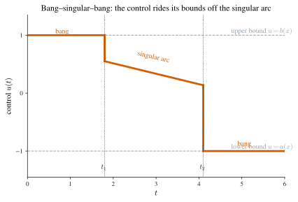
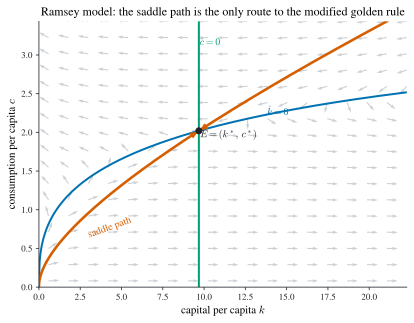
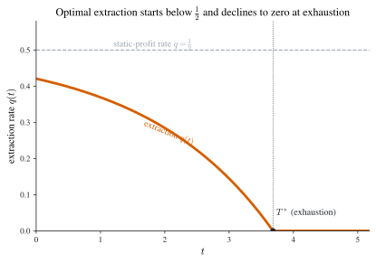

4 Optimal Control
The calculus of variations of the previous chapter optimizes over a path \(x(\cdot)\) directly, through the velocity \(\dot x\). Optimal control theory, developed in the mid-twentieth century by Pontryagin and his school (Pontryagin et al. 1962), reorganizes the same problems around a sharper distinction: between the state \(x\), which the planner cares about but cannot touch, and the control \(u\), which the planner sets and which drives the state through a law of motion \(\dot x=g(t,x,u)\). The objective is an integral of a running payoff \(f(t,x,u)\), and the central idea is to steer \(x\) along an ideal trajectory by choosing \(u\).
This reframing buys three things the bare calculus of variations lacks. First, it handles differential constraints \(\dot x=g\) natively rather than by elimination. Second, it accommodates bounded controls \(u\in U\) — the typical economic situation, where investment cannot be negative or extraction cannot exceed capacity — through a maximization condition rather than a derivative set to zero, so that boundary (bang-bang) solutions are first-class citizens. Third, it attaches to the state a costate \(\lambda\), the multiplier on the law of motion, whose economic reading as the shadow price of the state organizes every application in this chapter.
The organizing result is the Pontryagin maximum principle: along an optimal path the control maximizes, instant by instant, a single scalar — the Hamiltonian
\[ H(t,x,u,\lambda)=f(t,x,u)+\lambda\,g(t,x,u), \tag{4.1}\]
— while the state and costate evolve as a Hamiltonian system \(\dot x=H_\lambda\), \(\dot\lambda=-H_x\), closed by a transversality condition at the free boundary. Where Chapter 3 had the pair (Euler equation, TVC), this chapter has the triple (maximum condition, costate equation, TVC). We derive the principle (Section 4.1), tabulate its transversality conditions (Section 4.2), extend it to vectors (Section 4.3) and to infinite horizons (Section 4.4, where Halkin’s counterexample shows the subtlety of the boundary term), handle pathwise constraints (Section 4.5), recover the most rapid approach path (Section 4.6), develop comparative statics (Section 4.7), prove the Mangasarian and Arrow sufficiency theorems (Section 4.8), and work the canonical economic applications (Section 4.9).
Notation. Throughout, \(x\) is the state, \(u\) the control, \(\dot x=g(t,x,u)\) the state equation, \(f\) the running payoff, and \(\lambda\) the costate. The (present-value) Hamiltonian is \(H=f+\lambda g\). For discounted autonomous problems we use the current-value Hamiltonian \(\mathcal{H}=f+\mu g\) with current-value costate \(\mu=\lambda e^{\rho t}\) and discount rate \(\rho>0\) (Section 4.1.3). Multipliers on algebraic constraints are written \(\eta\), reserving \(\theta\) for the exogenous parameter in comparative statics. This matches the master table in Notation; the course writes \(\dot x=f\), \(H_c\), and \(\gamma\) for these objects.
4.1 The free-boundary case: the maximum principle
The standard optimal control problem is
\[ \begin{aligned} \max_{u}\quad & \int_0^T f(t,x,u)\,\mathrm{d}t\\ \text{s.t.}\quad & \dot x=g(t,x,u)\quad\text{(off finitely many corners)},\\ & x(0)=x_0, \end{aligned} \tag{4.2}\]
with \(T\) and \(x_0\) fixed, \(f,g\) smooth, the state \(x\) continuous and piecewise smooth, and the control \(u\) piecewise smooth. The terminal \(x(T)\) is free — the “free-boundary” case that the rest of the chapter perturbs.
Statement and derivation
Theorem 4.1 (Pontryagin maximum principle (free terminal)) If \((x,u)\) solves Equation 4.2, then there is a continuous, piecewise-smooth costate \(\lambda(t)\) such that \((x,u,\lambda)\) satisfies, with \(H=f+\lambda g\) as in Equation 4.1,
\[ H\bigl(t,x(t),u(t),\lambda(t)\bigr)=\max_{u}\,H\bigl(t,x(t),u,\lambda(t)\bigr), \qquad t\in[0,T], \tag{4.3}\]
together with the Hamiltonian system and transversality condition
\[ \dot\lambda=-H_x,\qquad \dot x=H_\lambda=g,\qquad \lambda(T)=0. \tag{4.4}\]
If moreover \(u(t)\) is interior to the control set, Equation 4.3 sharpens to the first- and second-order conditions
\[ H_u=0,\qquad H_{uu}\le 0, \tag{4.5}\]
and along the optimal path \(\dfrac{\mathrm{d}}{\mathrm{d}t}H=H_t\).
Proof. For any feasible pair \((y,v)\) — meaning \(\dot y=g(t,y,v)\) and \(y(0)=x_0\) — and any continuous piecewise-smooth function \(\lambda\), integrate by parts to rewrite the objective:
\[ \int_0^T f(t,y,v)\,\mathrm{d}t =\int_0^T\!\bigl[f+\lambda(g-\dot y)\bigr]\mathrm{d}t =\int_0^T\!\bigl[H(t,y,v,\lambda)+\dot\lambda\,y\bigr]\mathrm{d}t-\bigl[\lambda y\bigr]_0^T . \tag{4.6}\]
This identity uses only \(\dot y=g\), so it holds along every feasible path; it converts the constrained integral into an unconstrained one at the cost of carrying \(\lambda\).
Now fix the optimal \((x,u)\) and choose \(\lambda\) to solve the linear terminal-value problem
\[ -\dot\lambda=f_x\bigl(t,x,u\bigr)+\lambda\,g_x\bigl(t,x,u\bigr)=H_x,\qquad \lambda(T)=0 . \tag{4.7}\]
Because \(f,g\) are smooth and \((x,u)\) piecewise smooth, Equation 4.7 is a first-order linear ODE with a boundary value and so has a unique continuous, piecewise-smooth solution: the costate exists. This defines \(\lambda\); we now show the maximum condition follows.
Perturb the control. Pick an arbitrary piecewise-continuous \(h(t)\) on \([0,T]\), set \(u_\varepsilon=u+\varepsilon h\) for \(\varepsilon\in\mathbb{R}\), and let \(x_\varepsilon\) be the state it generates (\(\dot x_\varepsilon=g(t,x_\varepsilon,u_\varepsilon)\), \(x_\varepsilon(0)=x_0\); this exists for the same reason \(\lambda\) does). Applying Equation 4.6 to \((x_\varepsilon,u_\varepsilon)\) and using \(\lambda(T)=0\), \(x_\varepsilon(0)=x_0\),
\[ V(\varepsilon):=\int_0^T f(t,x_\varepsilon,u_\varepsilon)\,\mathrm{d}t =\int_0^T\!\bigl[H(t,x_\varepsilon,u_\varepsilon,\lambda)+\dot\lambda\,x_\varepsilon\bigr]\mathrm{d}t+\lambda(0)x_0 . \]
Since \((x,u)\) is optimal, \(V\) has a maximum at \(\varepsilon=0\). Differentiating under the integral, writing \(\partial x_\varepsilon/\partial\varepsilon\big|_0=:\xi\),
\[ 0=V'(0)=\int_0^T\Bigl[(H_x+\dot\lambda)\,\xi+H_u\,h\Bigr]\mathrm{d}t =\int_0^T H_u\,h\,\mathrm{d}t, \tag{4.8}\]
because \(H_x+\dot\lambda=0\) by the very choice Equation 4.7 of \(\lambda\) — that choice was engineered precisely to annihilate the awkward \(\xi\) term, whose dynamics we never need to compute. As \(h\) is arbitrary, the fundamental lemma forces \(H_u\equiv 0\) along the optimum; this is the interior first-order half of Equation 4.5. The full maximum condition Equation 4.3 is the global statement of the same idea: holding \((t,x,\lambda)\) at their optimal values, the optimal \(u\) cannot be beaten by any feasible alternative, interior or not, because any improving \(u\) would, by Equation 4.6, raise the objective. The interior second-order condition \(H_{uu}\le0\) is the local necessary condition \(V''(0)\le0\) at an interior maximizer of \(H\) in \(u\) (the analogue of the Legendre condition). Finally, the costate equation \(\dot\lambda=-H_x\) is Equation 4.7 itself, \(\dot x=H_\lambda=g\) is the state equation, and \(\lambda(T)=0\) is its terminal value, so the system Equation 4.4 holds. The envelope identity \(\tfrac{\mathrm{d}}{\mathrm{d}t}H=H_t\) follows from \(\dot H=H_t+H_x\dot x+H_u\dot u+H_\lambda\dot\lambda\) with \(H_u=0\), \(\dot x=H_\lambda\), \(\dot\lambda=-H_x\), which cancels all but \(H_t\). \(\;\blacksquare\)
Three remarks fix the vocabulary and the economic content.
Names. Equation Equation 4.3 is the maximum condition (or maximum principle); the pair \(\dot\lambda=-H_x\), \(\dot x=H_\lambda\) are the equations of motion of \(\lambda\) and \(x\) and together form the Hamiltonian system; \(\lambda(T)=0\) is the transversality condition (TVC). When the control is bounded, \(u\in[a,b]\), the interior conditions Equation 4.5 need not hold — the maximizer of \(H\) may sit at an endpoint \(a\) or \(b\) — so one returns to the global condition Equation 4.3. This is the decisive practical difference from the calculus of variations.
Relation to the Euler–Lagrange treatment of §3.7. Reading Equation 4.2 as a variational problem in the two paths \((x,u)\) with the differential constraint \(\dot x=g\), the constrained Lagrangian is \(L=f+\lambda(g-\dot x)\) and the three Euler–Lagrange equations \(L_{x}=\tfrac{\mathrm d}{\mathrm dt}L_{\dot x}\), \(L_{u}=\tfrac{\mathrm d}{\mathrm dt}L_{\dot u}\), \(L_{\lambda}=\tfrac{\mathrm d}{\mathrm dt}L_{\dot\lambda}\) reduce exactly to \(H_x=-\dot\lambda\), \(H_u=0\), \(H_\lambda=\dot x\). The maximum principle is sharper: it replaces \(H_u=0\) (which presumes an interior, smooth optimum) by the global maximization Equation 4.3, extracting information at boundary controls and corners that the Euler–Lagrange route misses.
The costate as a shadow price
The costate is not a bookkeeping device; it prices the state. Embed Equation 4.2 in a family indexed by the initial stock, replacing \(x(0)=x_0\) by \(x(0)=x_0+\epsilon\), and let \(V(\epsilon)\) be the resulting optimal value, with \(\lambda\) the costate of the \(\epsilon=0\) problem. Applying Equation 4.6 to the \(\epsilon\)-optimal path,
\[ V(\epsilon)=\int_0^T\!\bigl[H(t,x_\epsilon,u_\epsilon,\lambda)+\dot\lambda\,x_\epsilon\bigr]\mathrm{d}t +\lambda(0)(x_0+\epsilon), \]
and differentiating at \(\epsilon=0\) — the interior and costate conditions kill the integral, exactly as in Equation 4.8 — leaves
\[ V'(0)=\lambda(0). \tag{4.9}\]
So \(\lambda(0)\) measures the sensitivity of the maximized total payoff to the initial stock: it is the shadow price of \(x_0\). Reading \(x\) as a firm’s capital, \(u\) as a decision affecting its growth, \(f\) as the instantaneous return and \(V\) as the total return, \(\lambda(0)\) is the marginal value of an extra unit of initial capital. The same argument run from time \(t\) shows \(\lambda(t)\) is the shadow price of the stock \(x(t)\): the marginal contribution of the date-\(t\) stock to the remaining payoff. The TVC \(\lambda(T)=0\) then says the obvious — at the end of a finite, free-terminal horizon, leftover stock is worthless.
Example 4.1 (Point to a line, by control) Recover the elementary fact that the shortest curve from a point to a line meets it perpendicularly. With time as the horizontal axis, minimize arclength \(\int_0^T\sqrt{1+u^2}\,\mathrm{d}t\) subject to \(\dot x=u\), \(x(0)=0\), \(x(T)\) free. Maximizing the negative, \(H=-\sqrt{1+u^2}+\lambda u\). The interior condition \(H_u=-u/\sqrt{1+u^2}+\lambda=0\), the costate equation \(-\dot\lambda=H_x=0\), and the TVC \(\lambda(T)=0\) give \(\lambda\equiv0\), hence \(u\equiv0\), hence \(\dot x\equiv0\) and (with \(x(0)=0\)) \(x\equiv0\). Since \(H_{xx}=H_{xu}=0\) and \(H_{uu}=-(1+u^2)^{-3/2}\le0\), \(H\) is concave in \((x,u)\), so by the Mangasarian theorem (Theorem 4.7) this is the global minimizer: the path runs straight and hits the line perpendicularly.
Example 4.2 (A bounded-control linear problem) \[ \max\int_0^2(2x-3u)\,\mathrm{d}t \quad\text{s.t.}\quad \dot x=x+u,\ x(0)=4,\ u\in[0,2]. \]
Here \(H=(2x-3u)+\lambda(x+u)=(2+\lambda)x+(\lambda-3)u\) is linear in \(u\), so the bound matters.
Costate. \(-\dot\lambda=H_x=2+\lambda\), i.e. \(\dot\lambda+\lambda=-2\), with general solution \(\lambda=ce^{-t}-2\). The TVC \(\lambda(2)=0\) gives \(c=2e^{2}\), so \(\lambda=2e^{2-t}-2\).
Control. Because \(H\) is linear in \(u\) with slope \(\lambda-3\), the maximizer is bang-bang,
\[ u=\begin{cases}2,&\lambda>3,\\[2pt]0,&\lambda<3,\end{cases} \]
and at \(\lambda=3\) the principle is silent. Solving \(2e^{2-t}-2=3\) gives the switch time \(\tau=2-\ln(5/2)\approx1.08\), so \(u=2\) on \([0,\tau)\) and \(u=0\) on \((\tau,2]\). (The single instant \(t=\tau\) does not matter: in continuous time the value of \(u\) at one point does not move the state.)
State. On \([0,\tau]\), \(\dot x=x+2\) with \(x(0)=4\) gives \(x=6e^{t}-2\), so \(x(\tau)=6e^{\tau}-2\). On \((\tau,2]\), \(\dot x=x\) with that value gives \(x=(6-2e^{-\tau})e^{t}\). The optimal state is the continuous concatenation; the optimal control is piecewise smooth with one jump.
The current-value Hamiltonian
Economic problems discount: the payoff is \(e^{-\rho t}f(t,x,u)\) with \(\rho>0\) the discount rate. Carrying the factor \(e^{-\rho t}\) through the costate equation is clumsy because the present-value costate \(\lambda\) then inherits an exponential trend. The remedy is the current-value Hamiltonian. For
\[ \max\int_0^T e^{-\rho t}f(t,x,u)\,\mathrm{d}t \quad\text{s.t.}\quad \dot x=g(t,x,u),\ x(0)=x_0, \tag{4.10}\]
define
\[ \mathcal{H}(t,x,u,\mu)=f(t,x,u)\,e^{\rho t}\cdot e^{-\rho t}+\mu\,g(t,x,u) = f(t,x,u)+\mu\,g(t,x,u),\qquad \mu:=\lambda e^{\rho t}, \tag{4.11}\]
so that the present-value Hamiltonian is \(H=\mathcal{H}e^{-\rho t}\) and \(\mu\) — the current-value costate — strips out the discount trend. Translating Theorem 4.1 through \(\mu=\lambda e^{\rho t}\) (so \(\dot\lambda=\dot\mu e^{-\rho t}-\rho\mu e^{-\rho t}\)) gives the conditions in current-value form:
\[ \mathcal{H}\bigl(t,x,u,\mu\bigr)=\max_u\mathcal{H}, \qquad \frac{\partial\mathcal{H}}{\partial x}=-\dot\mu+\rho\mu, \qquad \frac{\partial\mathcal{H}}{\partial \mu}=\dot x, \qquad \mu(T)e^{-\rho T}=0 . \tag{4.12}\]
The only change from the present-value system is the extra \(+\rho\mu\) in the costate equation — the “interest” the planner charges on the shadow price — and the TVC \(\mu(T)e^{-\rho T}=0\), equivalently \(\mu(T)=0\) for finite \(T\). We use this form for every discounted application below.
4.2 Other boundary cases
As in Section 3.4 of the variational chapter, the interior conditions of the maximum principle are unchanged by the terminal data; only the transversality condition changes. Consider Equation 4.2 with the terminal subject to one of the eight standard constraints. The maximum condition Equation 4.3 and the equations of motion \(\dot\lambda=-H_x\), \(\dot x=g\) continue to hold; the TVC \(\lambda(T)=0\) is replaced according to the following table, the optimal-control analogue of the variational TVC table (Theorem 3.2).
Theorem 4.2 (Transversality conditions) For Equation 4.2 with \(x(0)=x_0\) fixed and \(H=f+\lambda g\), the optimal \((x,u,\lambda)\) satisfies Equation 4.3, \(\dot\lambda=-H_x\), \(\dot x=g\), together with the boundary condition matching the terminal type:
| Terminal constraint | Transversality condition |
|---|---|
| (a) \(T\), \(x(T)=x_1\) both fixed | \(x(T)=x_1\) |
| (b) \(T\) free, \(x(T)=x_1\) fixed | \(x(T)=x_1,\quad H\big|_T=0\) |
| (c) \(T\) and \(x(T)\) both free | \(\lambda(T)=0,\quad H\big|_T=0\) |
| (d) \(T\) free, \(x(T)=\varphi(T)\) on a curve | \(\bigl(H-\lambda\dot\varphi\bigr)\big|_T=0\) |
| (e) \(T\) fixed, \(x(T)\ge x_1\) | \(\lambda(T)\ge0,\ x(T)\ge x_1,\ \bigl(x(T)-x_1\bigr)\lambda(T)=0\) |
| (f) \(x(T)=x_1\) fixed, \(T\le t_1\) | \(x(T)=x_1,\ H\big|_T\ge0,\ T\le t_1,\ (T-t_1)H\big|_T=0\) |
| (g) \(T\le t_1\), \(x(T)\) free | \(\lambda(T)=0,\ H\big|_T\ge0,\ T\le t_1,\ (T-t_1)H\big|_T=0\) |
| (h) \(T\) free, \(x(T)\ge\varphi(T)\) | \(\bigl(H-\lambda\dot\varphi\bigr)\big|_T=0,\ \lambda(T)\ge0,\ x(T)\ge\varphi(T),\ \bigl(x(T)-\varphi(T)\bigr)\lambda(T)=0\) |
Proof. The single source is the variation of the objective, derived as in Section 3.4. Take the optimal \((x,u)\) with costate \(\lambda\), a nearby feasible \((y,v)=(x+p,\,u+q)\) defined on \([0,T+\Delta T]\), with \(\Delta T,p,q\) small. Writing the objective via Equation 4.6 for both paths and subtracting, the first-order change is
\[ \delta J=\int_0^T\bigl[(H_x+\dot\lambda)\,p+H_u\,q\bigr]\mathrm{d}t +H\big|_T\,\Delta T-\lambda(T)\,\delta x_T, \tag{4.13}\]
where \(\delta x_T=p(T)+\dot x(T)\Delta T\) is the displacement of the terminal point. The interior conditions \(H_x+\dot\lambda=0\) and \(H_u=0\) annihilate the integral, leaving the master inequality
\[ \delta J=H\big|_T\,\Delta T-\lambda(T)\,\delta x_T\le0 \tag{4.14}\]
for every admissible \((\Delta T,\delta x_T)\). Each table line specializes Equation 4.14.
(c) Both free: \(\Delta T\) and \(\delta x_T\) are independent free reals, so each coefficient vanishes: \(H\big|_T=0\) and \(\lambda(T)=0\). (b) \(T\) free, \(x(T)\) fixed: \(\delta x_T=0\), \(\Delta T\) free, giving \(H\big|_T=0\). (d) Terminal on a curve: the endpoint tracks \(\varphi\), so \(\delta x_T=\dot\varphi(T)\Delta T\) and Equation 4.14 reads \(\bigl(H-\lambda\dot\varphi\bigr)\big|_T\Delta T=0\) for free \(\Delta T\). (e) Inequality \(x(T)\ge x_1\): \(\delta x_T\ge0\) when the constraint binds and is free when slack; \(-\lambda(T)\delta x_T\le0\) for all such \(\delta x_T\) forces \(\lambda(T)\ge0\) with complementary slackness. (g) \(T\le t_1\), \(x(T)\) free: the value \(\Delta T=0\) is always admissible and \(\delta x_T\) free, so \(-\lambda(T)\delta x_T\le0\) for all signs gives \(\lambda(T)=0\); then \(\delta J=H\big|_T\Delta T\le0\), and at \(T=t_1\) only \(\Delta T\le0\) is admissible (forcing \(H\big|_T\ge0\)) while at \(T<t_1\) both signs are admissible (forcing \(H\big|_T=0\)), which combine into the complementary-slackness line. The remaining lines follow identically. \(\;\blacksquare\)
No solution. The TVC equations may be inconsistent, or may have only inadmissible solutions — for example, a “free” terminal time \(T\) that comes out negative. When that happens the conclusion is that the optimization problem has no solution, not that the principle has failed.
Example 4.3 (Both endpoints fixed) \(\min\int_0^1 u^2\,\mathrm{d}t\) s.t. \(\dot x=x+u\), \(x(0)=0\), \(x(1)=1\). With \(H=-u^2+\lambda(x+u)\): \(-\dot\lambda=H_x=\lambda\) gives \(\lambda=2ce^{-t}\); \(H_u=-2u+\lambda=0\) gives \(u=ce^{-t}\). Then \(\dot x=x+ce^{-t}\) has solution \(x=c_1e^{t}+c_2e^{-t}\), and the two fixed endpoints pin \(c_1=\tfrac{1}{e-e^{-1}}\), \(c_2=-\tfrac{1}{e-e^{-1}}\) (no TVC needed — line (a)).
Example 4.4 (An inequality terminal that binds) \(\min\int_0^1 u^2\,\mathrm{d}t\) s.t. \(\dot x=x+u\), \(x(0)=0\), \(x(1)\ge3\). As above \(\lambda=2ce^{-t}\), \(\lambda=2u\). Line (e) gives the TVC \(\lambda(1)\ge0\), \(x(1)\ge3\), \(\bigl(x(1)-3\bigr)\lambda(1)=0\). Try the slack branch \(\lambda(1)=0\): then \(c=0\), so \(\lambda\equiv0\), \(u\equiv0\), \(\dot x=x\), \(x(0)=0\Rightarrow x\equiv0\), contradicting \(x(1)\ge3\). So the constraint binds, \(x(1)=3\), and the TVC becomes \(\lambda(1)\ge0\). Solving \(\dot x=x+ce^{-t}\) with \(x(0)=0\), \(x(1)=3\) gives \(c_1=c_2=\tfrac{3}{e-e^{-1}}\cdot(\pm1)\) with \(c_2<0\), and one verifies \(\lambda(1)=2u(1)=2\bigl(\dot x(1)-x(1)\bigr)=-2c_2e^{-1}>0\), consistent.
Example 4.5 (A minimum-time problem (free \(T\), fixed \(x(T)\))) \(\min\int_0^T 1\,\mathrm{d}t\) s.t. \(\dot x=x+u\), \(x(0)=5\), \(x(T)=11\), \(u\in[-1,1]\), \(T\) free. Here \(H=-1+\lambda(x+u)\), \(-\dot\lambda=H_x=\lambda\) gives \(\lambda=ce^{-t}\). The free-\(T\), fixed-\(x(T)\) TVC (line (b)) is \(H\big|_T=0\), i.e. \(ce^{-T}\bigl(11+u(T)\bigr)=1\). Since \(11+u(T)>0\), we need \(c>0\), hence \(\lambda>0\) for all \(t\); as \(H=\lambda u+\lambda(x-1)\) is strictly increasing in \(u\), the maximizer is \(u\equiv1\). Then \(\dot x=x+1\), \(x(0)=5\) gives \(x=6e^{t}-1\), and \(6e^{T}-1=11\) yields the minimum time \(T=\ln 2\).
4.3 The multivariate maximum principle
Everything extends verbatim to a vector state \(x\in\mathbb{R}^n\) and vector control \(u\in\mathbb{R}^m\) with \(g:\mathbb{R}^{1+n+m}\to\mathbb{R}^n\). The costate \(\lambda\in\mathbb{R}^n\) now lives in the same space as \(x\), and \(\lambda g\) denotes the inner product \(\sum_i\lambda_i g_i\).
Theorem 4.3 (Multivariate maximum principle) If \((x,u)\) solves Equation 4.2 with \(x\in\mathbb{R}^n\), \(u\in\mathbb{R}^m\), there is an \(n\)-vector costate \(\lambda\) with, for \(H=f+\lambda\cdot g\),
\[ H\bigl(t,x,u,\lambda\bigr)=\max_{u}H,\qquad \dot\lambda=-H_x,\qquad \dot x=H_\lambda=g,\qquad \lambda(T)=0, \tag{4.15}\]
where \(H_x=(\partial H/\partial x_i)_{i}\). When \(u\) is unconstrained, Equation 4.15 sharpens to \(H_u=0\) (an \(m\)-vector) and \(H_{uu}\preceq0\) (the \(m\times m\) Hessian negative semidefinite — the Legendre analogue), and \(\tfrac{\mathrm d}{\mathrm dt}H=H_t\).
The proof is the scalar one with inner products replacing products; the costate components solve the linear system \(-\dot\lambda_i=f_{x_i}+\sum_j\lambda_j g_{j,x_i}\), \(\lambda_i(T)=0\). Boundary variations give the vector master inequality
\[ \delta J=H\big|_T\,\Delta T-\lambda(T)\cdot\delta x_T\le0, \tag{4.16}\]
from which all vector transversality conditions read off as before. One new boundary type deserves a worked derivation: a smooth terminal manifold \(K(x,t)\big|_T\ge0\), with \(K\) an \((n+1)\)-variable function.
Proposition 4.1 (Transversality on a terminal manifold) For Equation 4.2 with terminal constraint \(K(x,t)\big|_T\ge0\) (\(K\) smooth, \(T\) free), the transversality conditions are: there exists \(p\in\mathbb{R}\) with
\[ \lambda(T)=p\,K_x\big|_T,\qquad p\ge0,\quad K\big|_T\ge0,\quad p\,K\big|_T=0,\qquad \bigl(H+pK_t\bigr)\big|_T=0 . \tag{4.17}\]
Proof. Start from Equation 4.16. Along the optimum, when \(K\big|_T>0\) the constraint is slack: all sufficiently small \(\Delta T,\delta x_T\) are admissible, so both coefficients vanish, \(H\big|_T=0\) and \(\lambda(T)=0\) — which is Equation 4.17 with \(p=0\). When \(K\big|_T=0\) the constraint binds, and the admissible variations are those keeping \(K\ge0\) to first order:
\[ (\mathrm dK)\big|_T=K_t\big|_T\,\Delta T+K_x\big|_T\cdot\delta x_T\ge0 . \]
For all such \((\Delta T,\delta x_T)\) we need \(-H\big|_T\,\Delta T+\lambda(T)\cdot\delta x_T\le0\), i.e. the linear functional \(\bigl(-H\big|_T,\lambda(T)\bigr)\) is nonpositive wherever \(\bigl(K_t\big|_T,K_x\big|_T\bigr)\) is nonnegative. By Farkas’ lemma there is \(p\ge0\) with \(\bigl(-H\big|_T,\lambda(T)\bigr)=p\bigl(K_t\big|_T,K_x\big|_T\bigr)\), that is \(\lambda(T)=pK_x\big|_T\) and \(H\big|_T=-pK_t\big|_T\), the second being \(\bigl(H+pK_t\bigr)\big|_T=0\). Unifying the slack (\(p=0\)) and binding cases gives Equation 4.17. \(\;\blacksquare\)
Example 4.6 (A two-state problem with a terminal manifold) \[ \min\int_0^1 u^2\,\mathrm{d}t\quad\text{s.t.}\quad \dot x=y,\ \dot y=u,\ x(0)=y(0)=0,\ x(1)+y(1)\ge2. \]
With \(H=-u^2+\lambda_1 y+\lambda_2 u\) and \(K=x+y-2\): \(H_u=-2u+\lambda_2=0\), \(-\dot\lambda_1=H_x=0\), \(-\dot\lambda_2=H_y=\lambda_1\) give \(\lambda_1\equiv c_1\), \(\lambda_2=c_2-c_1t\), \(u=\tfrac{c_2}{2}-\tfrac{c_1}{2}t\). Integrating with the zero initial data, \(y=\tfrac{c_2}{2}t-\tfrac{c_1}{4}t^2\) and \(x=\tfrac{c_2}{4}t^2-\tfrac{c_1}{12}t^3\). The manifold TVC (line at \(T=1\)) is \(\bigl(\lambda_1,\lambda_2\bigr)\big|_1=p\,(K_x,K_y)=p(1,1)\) with \(p\ge0\), \(K\big|_1\ge0\), \(pK\big|_1=0\): \[ \begin{pmatrix}c_1\\ c_2-c_1\end{pmatrix}=p\begin{pmatrix}1\\1\end{pmatrix}, \qquad p\ge0,\ \tfrac34 c_2-\tfrac13 c_1\ge2,\ p\bigl(\tfrac34 c_2-\tfrac13 c_1-2\bigr)=0, \] whose solution is \(p=c_1=\tfrac{12}{7}\), \(c_2=\tfrac{24}{7}\).
Initial boundaries are handled symmetrically. For a problem on \([t_0,t_1]\) with both endpoints on curves \(x(t_0)=\varphi(t_0)\), \(x(t_1)=\psi(t_1)\) and both times free, the TVCs are \(\bigl(H-\lambda\dot\varphi\bigr)\big|_{t_0}=0\) and \(\bigl(H-\lambda\dot\psi\bigr)\big|_{t_1}=0\).
4.4 Infinite-horizon problems
The leading economic case runs forever:
\[ \max_{u}\ J(x,u)=\int_0^\infty f(t,x,u)\,\mathrm{d}t \quad\text{s.t.}\quad \dot x=g(t,x,u),\ x(0)=x_0, \tag{4.18}\]
where feasibility now demands, on top of the law of motion and the initial condition, that the improper integral exist. (Existence in the Riemann sense means at least one of \(\int_0^\infty f^+\), \(\int_0^\infty f^-\) is finite; convergence means both are, with \(f^\pm=\max\{\pm f,0\}\).) The interior necessary conditions are exactly those of the finite horizon; the subtlety is entirely in the boundary term.
Theorem 4.4 (Infinite-horizon necessary conditions) If \((x,u)\) solves Equation 4.18, there is a costate \(\lambda\) with \(H=f+\lambda g\) and
\[ H\bigl(t,x,u,\lambda\bigr)=\max_u H,\qquad \dot\lambda=-H_x,\qquad \dot x=g, \qquad \lim_{t\to\infty}H\big|_t=0, \tag{4.19}\]
with the interior sharpenings \(H_u=0\), \(H_{uu}\le0\) and \(\tfrac{\mathrm d}{\mathrm dt}H=H_t\) when \(u\) is unconstrained.
The transversality condition \(\lim_{t\to\infty}H\big|_t=0\) was established rigorously by Michel (Michel 1982). Kamihigashi (Kamihigashi 2001) proved the weaker, costate-on-the-state condition
\[ \text{if }x\text{ is free at }t=\infty,\qquad \lim_{t\to\infty}\lambda(t)\,x(t)=0 , \tag{4.20}\]
whose economic reading is appealing — the present value of the terminal stock, priced at its marginal value \(\lambda\), is asymptotically exhausted — and which is widely imposed in applications. But Equation 4.20 is not a theorem in full generality, as Halkin’s celebrated example shows.
Halkin’s counterexample
Example 4.7 (Halkin’s example) \[ \max\int_0^\infty (1-x)u\,\mathrm{d}t \quad\text{s.t.}\quad \dot x=(1-x)u,\ x(0)=0,\ u\in[0,1]. \]
The honest answer first. The integrand is \(\dot x\), so the objective telescopes: \(\int_0^\infty \dot x\,\mathrm{d}t=x(\infty)-x(0)=x(\infty)\). The problem is simply to maximize the terminal value \(x(\infty)\). From \(\dot x+ux=u\) with \(x(0)=0\),
\[ x(t)=1-e^{-U(t)},\qquad U(t)=\int_0^t u(s)\,\mathrm{d}s, \tag{4.21}\]
so \(x<1\) always and \(x(\infty)=1\) is attainable by any \(u\in[0,1]\) whose integral \(U\) diverges. The optimum exists and is highly non-unique; none of this used the maximum principle.
What the principle says about \(\lambda\). Form \(H=(1-x)u+\lambda(1-x)u=(1+\lambda)(1-x)u\). Since \(H\) is linear in \(u\) and \(1-x>0\), the maximum condition gives the bang-singular structure \[ u=\begin{cases}1,&\lambda>-1,\\0,&\lambda<-1,\end{cases} \] with \(\lambda=-1\) a singular value at which the principle does not pin \(u\). The costate equation \(\dot\lambda=-H_x=(1+\lambda)u\), i.e. \(\dot\lambda-\lambda u=u\), integrates to \[ \lambda(t)=-1+ce^{U(t)} . \tag{4.22}\]
Now impose the genuine TVC \(\lim_t H\big|_t=0\). Since \(H=(1+\lambda)(1-x)u=ce^{U}(1-x)u\) and (by Equation 4.21) \(1-x=e^{-U}\), we get \(H=cu\); an optimal \(u\) has \(U\to\infty\), and along any segment where \(u\) is interior we already need \(c=0\). Either way \(\lim_t H=0\) forces \(c=0\). Hence \(\lambda\equiv-1\) and \(H\equiv0\).
The punchline. With \(\lambda\equiv-1\) and \(x(\infty)=1\), \[ \lim_{t\to\infty}\lambda(t)\,x(t)=-1\neq0 , \] so the Kamihigashi-type condition Equation 4.20 fails, and a fortiori \(\lim_t\lambda(t)=0\) fails. Even with no explicit constraint on \(x(\infty)\), the asymptotic costate condition need not hold: Equation 4.20 is not universally valid.
Why it is not a true counterexample to the free-state claim. Halkin’s example does not refute “\(x(\infty)\) free \(\Rightarrow \lambda x\big|_\infty=0\)”, because in it \(x(\infty)\) is not truly free. The law of motion and \(u\in[0,1]\) force \(0\le x(t)\le1\) for all \(t\), hence \(0\le x(\infty)\le1\): there is an implicit state constraint, and the optimum sits on its boundary \(x(\infty)=1\). As in the finite-horizon analysis, the boundary case is exactly where the naive TVC can break. So Halkin’s example warns that an active (even implicit) state bound voids the asymptotic costate condition — it does not show the condition fails when the state is genuinely free. Note too that \(\lim_t H=0\) here holds for the specific \(\lambda\equiv-1\).
For the discounted autonomous case the conditions take current-value form: \(\mathcal{H}=\max\), \(\partial\mathcal{H}/\partial x=-\dot\mu+\rho\mu\), \(\dot x=g\), with the present-value TVC \(\lim_t e^{-\rho t}\mathcal{H}\big|_t=0\) and the commonly-imposed \(\lim_t e^{-\rho t}\mu(t)x(t)=0\).
Infinite-horizon sufficiency
Necessary conditions usually yield several candidates; sufficiency selects. The infinite-horizon Arrow theorem closes the gap.
Theorem 4.5 (Infinite-horizon Arrow sufficiency) For Equation 4.18, suppose \((x,u,\lambda)\) satisfies \(H_x+\dot\lambda=0\), \(H_u=0\), \(H_\lambda=\dot x\), that the maximized Hamiltonian \(H^0(t,x)=\max_u H(t,x,u,\lambda(t))\) is concave in \(x\), and that \[ \limsup_{t\to\infty}\ \lambda(t)\bigl(y(t)-x(t)\bigr)\ge0\qquad\text{for every feasible state }y . \tag{4.23}\] Then \((x,u)\) is optimal.
Proof. For any feasible \((y,v)\) set \(p=y-x\). By Equation 4.6 on \([0,T]\), \[ \int_0^T\!\bigl[f(t,y,v)-f(t,x,u)\bigr]\mathrm{d}t =\int_0^T\!\bigl[H(t,y,v,\lambda)-H(t,x,u,\lambda)+\dot\lambda\,p\bigr]\mathrm{d}t-\lambda p\big|_0^T . \] Now \(H(t,y,v,\lambda)\le H^0(t,y)\) (definition of \(H^0\)) and \(H(t,x,u,\lambda)=H^0(t,x)\) (the optimum attains the max), so the bracket is \(\le H^0(t,y)-H^0(t,x)+\dot\lambda p\). Concavity of \(H^0\) in \(x\) gives \(H^0(t,y)-H^0(t,x)\le H^0_x(t,x)\,p\), and \(H^0_x(t,x)=H_x(t,x,u,\lambda)=-\dot\lambda\) by the envelope theorem, so the bracket is \(\le0\). With \(p(0)=0\), \[ \int_0^T\!\bigl[f(t,y,v)-f(t,x,u)\bigr]\mathrm{d}t\le-\lambda(T)p(T). \] Let \(T\to\infty\): \(J(y,v)-J(x,u)\le\liminf_T\bigl(-\lambda(T)p(T)\bigr)=-\limsup_T\bigl(\lambda(T)p(T)\bigr)\). By Equation 4.23, \(\limsup_T\lambda(T)p(T)\ge0\), so \(J(y,v)-J(x,u)\le0\), i.e. \(J(x,u)-J(y,v)\ge\limsup_T\bigl(\lambda p\big|_T\bigr)\ge0\). Hence \((x,u)\) is optimal. \(\;\blacksquare\)
A practical selection rule. Because the optimum lies among the paths satisfying the necessary conditions, if existence of an optimum is known, one may simply compare the finitely many candidate paths and keep the best — particularly useful when a phase diagram delivers a unique convergent (saddle) path. Verifying Equation 4.23 against all candidate \(y\) then confirms optimality. We use exactly this strategy in the Ramsey and lake-resource applications below.
4.5 More complex constraints
So far constraints lived only at the terminal. We now allow constraints along the whole path: all variables remain at least piecewise smooth. Throughout, \(x\in\mathbb{R}^n\), \(u\in\mathbb{R}^m\), \(g\) \(n\)-valued, and the new constraint function \(h\) is \(k\)-valued.
Algebraic equality and inequality constraints
For the equality problem
\[ \max\int_0^T f\,\mathrm{d}t\quad\text{s.t.}\quad \dot x=g,\ h(t,x,u)=0,\ x(0)=x_0, \tag{4.24}\]
augment the Hamiltonian with a multiplier \(\eta(t)\in\mathbb{R}^k\) on the algebraic constraint:
\[ H=f+\lambda g+\eta\, h . \tag{4.25}\]
If \((x,u)\) is optimal (and the constraint is consistent), there exist \(\lambda\) and \(\eta\) with
\[ H_u=0,\quad H_{uu}\preceq0,\qquad \dot\lambda=-H_x,\qquad H_\eta=h=0,\qquad \lambda(T)=0 . \tag{4.26}\]
Here \(\lambda\) is the costate (Hamilton multiplier) on the dynamic constraint and \(\eta\) the Lagrange multiplier on the algebraic one. For the inequality problem \(h(t,x,u)\ge0\) the multiplier turns nonnegative with complementary slackness:
\[ H=f+\lambda g+\eta\, h,\qquad H_u=0,\ H_{uu}\preceq0,\quad \dot\lambda=-H_x,\quad \eta\ge0,\ h\ge0,\ \eta\odot h=0,\quad \lambda(T)=0 . \tag{4.27}\]
Both follow from the objective variation plus Farkas’ lemma exactly as in Proposition 4.1; the slackness \(\eta\odot h=0\) is the variational KKT condition. For sufficiency: if \(H\) (with the multipliers fixed at their optimal values) is concave in \((x,u)\), a path meeting the necessary conditions is optimal; in the one-dimensional infinite-horizon case the extra tail \(\limsup_t\lambda(y-x)\ge0\) secures optimality.
Example 4.8 (When multipliers proliferate) \[ \max\int_0^3(4-t)u\,\mathrm{d}t\quad\text{s.t.}\quad \dot x=u,\ x\le t+1,\ 0\le u\le2,\ x(0)=0,\ x(3)=3. \]
With three inequality constraints, \(H=(4-t)u+\lambda u+\eta(t+1-x)+\eta_1 u+\eta_2(2-u)\) and the necessary conditions are \[ 0=H_u=4-t+\lambda+\eta_1-\eta_2,\qquad -\dot\lambda=H_x=-\eta, \] with slackness \(\eta\ge0,\ \eta(t+1-x)=0\); \(\eta_1\ge0,\ \eta_1u=0\); \(\eta_2\ge0,\ \eta_2(2-u)=0\). Eliminating, \(-2\eta_2=(\eta_1-\eta_2)u=-(\lambda-t+4)u\), so \((\lambda-t+4)\,u\,(2-u)=0\). On any interior arc \(u\in(0,2)\) this forces \(\lambda=t-4\), hence \(\eta=\dot\lambda=1\) and (from the binding \(x=t+1\)) the arc rides the upper boundary. The principle thus yields only: \(u\in\{0,1,2\}\), and \(u=1\Leftrightarrow x=t+1\). Pinning the path needs the objective’s structure.
Finishing with calculus. Integrating by parts, \(\int_0^3(4-t)u\,\mathrm{d}t=\int_0^3(4-t)\,\mathrm{d}x=\bigl[(4-t)x\bigr]_0^3+\int_0^3 x\,\mathrm{d}t =3+\int_0^3 x\,\mathrm{d}t\), so the problem is equivalent to \(\max\int_0^3 x\,\mathrm{d}t\) over monotone curves from \((0,0)\) to \((3,3)\) lying below both \(x=t+1\) and \(x=2t\) (the latter from \(\dot x\le2\)). The area is maximized by hugging the upper envelope, giving \[ x=\begin{cases}2t,&t\in[0,1],\\ t+1,&t\in(1,2),\\ 3,&t\in[2,3],\end{cases} \] i.e. \(u=2\), then \(1\), then \(0\). The example’s moral: many constraints breed many multipliers and the maximum principle alone may not isolate the optimum — supplementary calculus or geometry is needed.
Bang-bang and singular solutions
When \(H\) is linear in \(u\) the maximum condition cannot be satisfied at an interior \(u\) unless the coefficient of \(u\) vanishes. Off such instants the optimal control sits at a boundary of the control set — a bang-bang control, switching between extremes; on intervals where the coefficient of \(u\) is identically zero the control is singular, undetermined by the principle and pinned only by a separate (higher-order) condition. Figure 4.1 shows the canonical bang–singular–bang profile.

Example 4.9 (A bang-bang investment problem) \[ \max\int_0^T (1-u)x\,\mathrm{d}t\quad\text{s.t.}\quad \dot x=xu,\ 0\le u\le1,\ x(0)=c>0. \]
With \(H=(1-u)x+\lambda xu=x+(\lambda-1)xu\), linear in \(u\) with switching coefficient \((\lambda-1)x\) and \(x>0\) throughout. The costate equation \(-\dot\lambda=H_x=1+(\lambda-1)u\) and the TVC \(\lambda(T)=0\) govern the structure. Because \(\dot\lambda=-1<0\) near \(T\) (where \(u=0\), as we now show), \(\lambda\) rises to the left from \(\lambda(T)=0\) along \(\lambda=T-t\), so \(\lambda<1\) on a left-neighbourhood of \(T\), giving (from \(H_u\)) \(u=0\) and \(\dot x=0\) there. If \(T\le1\), this persists to \(t=0\) and the optimum is \(x\equiv c\). If \(T>1\), \(\lambda\) reaches \(1\) at \(t=T-1\); to its left \(\lambda>1\) forces \(u=1\), where \(\dot\lambda+\lambda=0\) gives \(\lambda=e^{T-1-t}\) and \(\dot x=x\) gives \(x=ce^{t}\). Hence the bang-bang optimum \[ x(t)=c\,e^{\,t\wedge(T-1)},\qquad u(t)=\begin{cases}1,&t<T-1,\\0,&t>T-1,\end{cases} \] (invest fully, then consume), where \(a\wedge b=\min(a,b)\). The two Lagrange multipliers on the \(u\)-bounds were unnecessary: linearity already forces \(u\in\{0,1\}\), with \(u=1\) iff \(\lambda>1\).
Corner conditions and state-constrained arcs
When the state is required smooth and is bounded by sloping lines, the optimum splits into free arcs (both bounds slack) joined to boundary arcs, with corner (matching) conditions at the junctions ensuring \(x\) and the relevant derivatives are continuous.
Example 4.10 (Free arcs joined to a state boundary) \[ \min\tfrac12\int_0^T\!\bigl(x^2+c^2u^2\bigr)\mathrm{d}t\quad\text{s.t.}\quad \dot x=u,\ a_1-b_1t\le x\le a_2-b_2t,\ x(0)=x_0>0,\ x(T)=0, \]
\(T\) free, \(c>0\), \(a_i,b_i>0\), \(a_2>x_0>a_1\), \(a_2/b_2>a_1/b_1\). Form \(H=\tfrac12(x^2+c^2u^2)+\lambda u+\eta_1(x+b_1t-a_1)+\eta_2(a_2-b_2t-x)\) (minimization, so we work with \(-H\) concave). On a free arc \(\eta_1=\eta_2=0\), \(-\dot\lambda=H_x=x\) and \(\lambda=-c^2u=-c^2\dot x\), whence \(-\dot\lambda=c^2\ddot x\) and the arc obeys \(\ddot x=c^{-2}x\), strictly convex with \[ x=k_1e^{t/c}+k_2e^{-t/c}. \tag{4.28}\] Checking the three TVC branches at the free \(T\) rules out \(a_1/b_1<T<a_2/b_2\) and \(T=a_1/b_1\) (each contradicts \(x(T)=0\) being the first hitting time), leaving \(T=a_2/b_2\). If the whole interval is free, the endpoints pin \(k_1,k_2\) in Equation 4.28; if the resulting arc violates a state bound, the optimum is a three-piece path — free arc, straight boundary arc \(x=a_1-b_1t\), free arc — with the corner conditions \(k_1+k_2=0\), \(k_1e^{t_1/c}+k_2e^{-t_1/c}=a_1-b_1t_1\), \(k_1e^{t_1/c}-k_2e^{-t_1/c}=-cb_1\) fixing \((k_1,k_2,t_1)\) so the free arc joins the boundary tangentially (smoothness of \(x\)), and symmetrically for the second junction. This is the control-theoretic picture behind Figure 4.1: the state, not the control, is the bounded object, and tangency replaces the bang.
Isoperimetric and integral constraints
An integral (isoperimetric) constraint \(\int_0^T h(t,x,u)\,\mathrm{d}t=a\) is absorbed by adding a state \(y(t)=\int_0^t h\), so that \(\dot y=h\), \(y(0)=0\), \(y(T)=a\). The Hamiltonian \(H=f+\lambda g+\nu h\) then has \(-\dot\nu=H_y=0\), so the multiplier \(\nu\) is a constant; one may therefore simply form
\[ H=f+\lambda g+\nu\,h\quad(\nu\text{ constant}) \tag{4.29}\]
and impose \(H_u=0\), \(\dot\lambda=-H_x\), \(\lambda(T)=0\). For an inequality integral constraint \(\int_0^T h\,\mathrm{d}t\ge a\) the same reduction gives the slackness conditions \(\nu\ge0\), \(y(T)\ge a\), \(\nu\bigl(y(T)-a\bigr)=0\).
Example 4.11 (An isoperimetric control problem) \[ \min\int_0^T u^2\,\mathrm{d}t\quad\text{s.t.}\quad \dot x=u,\ x(0)=1,\ \int_0^T x\,\mathrm{d}t=2, \]
with \(T\) and \(x(T)\) both free. With \(H=-u^2+\lambda u+\nu x\) (\(\nu\) constant): \(-\dot\lambda=H_x=\nu\) gives \(\lambda=-\nu t+C\), and the free-\(x(T)\) TVC \(\lambda(T)=0\) gives \(C=\nu T\), so \(\lambda=\nu(T-t)\); then \(H_u=-2u+\lambda=0\) gives \(u=\tfrac{\nu}{2}(T-t)\) and \(x=-\tfrac{\nu}{4}(t-T)^2+\kappa\). The free-\(T\) TVC \(H\big|_T=0\) reduces (since \(u(T)=0\)) to \(\nu x(T)=0\), so either \(\nu=0\) or \(x(T)=0\). The branch \(\nu=0\) gives \(x\equiv1\) (from \(x(0)=1\)) and \(\int_0^T x=2\Rightarrow T=2\), with objective value \(0\). The branch \(x(T)=0\) gives, after imposing \(x(0)=1\) and the integral, \(T=6\), \(\nu=-\tfrac19\), \(x=\tfrac{1}{36}(t-6)^2\), with a positive objective value. The minimizer is therefore \(x\equiv1\), \(u\equiv0\), \(T=2\) — every feasible path gives a nonnegative integral, and this one attains \(0\).
4.6 Most rapid approach paths
When the running payoff and the law of motion combine into something linear in \(\dot x\), the optimal-control problem reduces to a variational MRAP problem and is solved by the most rapid approach path method of Section 3.6. Concretely, the discounted control problem
\[ \max\int_0^\infty e^{-\rho t}\bigl[P(x)+Q(x)f(x,u)\bigr]\mathrm{d}t \quad\text{s.t.}\quad \dot x=F(x)+G(x)f(x,u),\ a(x)\le u\le b(x),\ x(0)=x_0, \tag{4.30}\]
converts — by solving the law of motion for \(f(x,u)\) and substituting — into
\[ \max\int_0^\infty e^{-\rho t}\bigl[M(x)+N(x)\dot x\bigr]\mathrm{d}t \quad\text{s.t.}\quad A(x)\le\dot x\le B(x),\ x(0)=x_0, \tag{4.31}\]
with \(M=P+Q\,(F\!-\!\cdot)/G\)-type combinations and the speed limits \(A,B\) inherited from \([a,b]\). This is precisely the linear-in-\(\dot x\) problem Equation 3.24 of Section 3.6. By Theorem 3.7 the optimum is the most rapid approach path: the algebraic singular condition \(M'(x)+\rho N(x)=0\) pins the turnpike \(x_s\), and the optimal policy drives \(x\) toward \(x_s\) at the maximal admissible speed — \(\dot x=B(x)\) from below, \(\dot x=A(x)\) from above — then stays at \(x_s\), under the same monotonicity and tail hypotheses of Theorem 3.7. The bang-bang structure of the control is the boundary speed; the singular arc is the turnpike. Thus the variational MRAP and the control-theoretic bang-singular-bang are two readings of one phenomenon.
4.7 Comparative statics
How does the optimal value respond to an exogenous parameter \(\theta\)? Consider the parametrized problem
\[ \begin{aligned} \max_u\quad & \int_0^{T(\theta)} f(t,x,u,\theta)\,\mathrm{d}t\\ \text{s.t.}\quad & \dot x=g(t,x,u,\theta),\ h(t,x,u,\theta)\ge0,\\ & x(0)=\alpha(\theta),\ x(T(\theta))=\psi(T(\theta)), \end{aligned} \tag{4.32}\]
with \(H=f+\lambda g+\eta h\), optimal path \(x(t,\theta),u(t,\theta)\), multipliers \(\lambda(t,\theta)\), \(\eta(t,\theta)\), and value \(V(\theta)=\int_0^{T(\theta)}f\,\mathrm{d}t\).
Theorem 4.6 (The comparative-statics formula) Assuming the optimal path and multipliers are differentiable in \(\theta\),
\[ \frac{\mathrm{d}V}{\mathrm{d}\theta} =\int_0^{T(\theta)}H_\theta\,\mathrm{d}t +T'(\theta)\bigl(H-\lambda x_t\bigr)\big|_{T(\theta)} -\bigl(\lambda x_\theta\bigr)\big|_0^{T(\theta)} . \tag{4.33}\]
Proof. Write \(V\) via Equation 4.6 and use \(\eta h=0\) (smoothness of \(\eta,h\), and slackness): \(V(\theta)=\int_0^{T}\bigl[H+\dot\lambda x\bigr]\mathrm{d}t-\bigl[\lambda x\bigr]_0^{T}\). Differentiate in \(\theta\). The Leibniz rule contributes the endpoint term \(T'(\theta)\bigl(H+\dot\lambda x\bigr)\big|_T\); inside, \(H_x x_\theta+H_u u_\theta+H_\lambda\lambda_\theta+H_\theta+\dot\lambda x_\theta\) collapses by the necessary conditions (\(H_x=-\dot\lambda\), \(H_u=0\), \(H_\lambda=\dot x\)) to \(H_\theta\) plus exact derivatives that integrate to boundary terms. Collecting and cancelling (using \(x_t=\dot x=H_\lambda\) at \(T\)) yields Equation 4.33. \(\;\blacksquare\)
Specializing Equation 4.33 gives the workhorse cases (all with no terminal-value constraint unless noted):
- Special case 1 (\(f,g,h,T\) independent of \(\theta\), \(\alpha(\theta)=\theta\)): \(V'(\theta)=\lambda(0,\theta)\) — the shadow price, recovering Equation 4.9.
- Special case 2 (\(f,g,h,\lambda\) independent of \(\theta\), \(T(\theta)=\theta\)): \(V'(\theta)=H\big|_{T(\theta)}=f\big|_{T(\theta)}\).
- Special case 3 (\(T,\alpha\) independent of \(\theta\)): \(V'(\theta)=\int_0^T H_\theta\,\mathrm{d}t\).
- Special case 4 (terminal-value constraint \(x(\theta,\theta)=\psi(\theta)\), \(T(\theta)=\theta\)): \(\psi'=x_t+x_\theta\), so \(V'(\theta)=\bigl(H-\lambda(x_t+x_\theta)\bigr)\big|_T =\bigl(H-\lambda\dot\psi\bigr)\big|_T\).
When \(\theta\) is itself a choice variable (e.g. a free terminal time), the first-order condition \(V'(\theta)=0\) reproduces exactly the TVCs of Section 4.2 — comparative statics and transversality are the same condition seen from two sides. The parameter-only version (fixed \(T\), no terminal constraint) reads \(\tfrac{\mathrm dV}{\mathrm d\theta}=\int_0^\infty H_\theta\,\mathrm{d}t+\lambda x_\theta\big|_0\), and \(\int_0^\infty H_\theta\,\mathrm{d}t\) alone when \(\alpha\) is \(\theta\)-free.
We apply Equation 4.33 (special case 4) to confirm optimality of a free-\(T\) extraction problem in Section 4.9.3; Figure 4.3 previews its solution.
4.8 Sufficiency: Mangasarian and Arrow
The maximum principle is necessary. Concavity makes it sufficient. The strongest hypothesis is Mangasarian’s; Arrow’s is weaker.
Theorem 4.7 (Mangasarian sufficiency) For Equation 4.2, suppose the Hamiltonian \(H=f+\lambda g\) is concave in \((x,u)\) jointly. Then any \((x,u,\lambda)\) satisfying the necessary conditions Equation 4.3–Equation 4.4 is optimal.
Proof. Let \((y,v)\) be any feasible pair. By Equation 4.6 for both paths (with \(y(0)=x(0)=x_0\), \(\lambda(T)=0\)),
\[ \int_0^T\!\bigl[f(t,y,v)-f(t,x,u)\bigr]\mathrm{d}t =\int_0^T\!\Bigl[\bigl(H(t,y,v,\lambda)-H(t,x,u,\lambda)\bigr)+\dot\lambda\,(y-x)\Bigr]\mathrm{d}t . \]
Concavity of \(H\) in \((x,u)\) gives the supporting inequality \(H(t,y,v,\lambda)-H(t,x,u,\lambda)\le H_x\,(y-x)+H_u\,(v-u)\), with \(H_x,H_u\) evaluated at \((x,u)\). Therefore the integrand is bounded above by \(\bigl(H_x+\dot\lambda\bigr)(y-x)+H_u\,(v-u)=0\), since \(H_x+\dot\lambda=0\) and \(H_u=0\) along the optimum. (At a boundary control where \(H_u\neq0\), the maximum condition still gives \(H(t,y,v,\lambda)-H(t,x,u,\lambda)\le0\) directly, because \(u\) maximizes \(H\); concavity is then used only in \(x\).) Hence \(\int_0^T\!\bigl[f(t,y,v)-f(t,x,u)\bigr]\mathrm{d}t\le0\), so \((x,u)\) is optimal. \(\;\blacksquare\)
When is \(H\) concave in \((x,u)\)? Two convenient sufficient conditions: (i) \(f\) and \(g\) are both concave in \((x,u)\) and \(\lambda\ge0\); or (ii) \(f\) is concave in \((x,u)\) and \(g\) is linear in \((x,u)\) (so \(\lambda g\) is linear, hence concave, of either sign). Both are common in applications — linear laws of motion, or nonnegative shadow prices.
Mangasarian’s joint concavity is often too strong. Arrow’s theorem asks only that the maximized Hamiltonian be concave in the state.
Theorem 4.8 (Arrow sufficiency) For Equation 4.2, suppose \((x,u,\lambda)\) satisfies the necessary conditions and the maximized Hamiltonian \[ H^0(t,x)=\max_u H(t,x,u,\lambda(t)) \] is concave in \(x\). Then \((x,u)\) is optimal.
Proof. As in Theorem 4.7, for feasible \((y,v)\), \(\int_0^T\!\bigl[f(t,y,v)-f(t,x,u)\bigr]\mathrm{d}t =\int_0^T\!\bigl[H(t,y,v,\lambda)-H(t,x,u,\lambda)+\dot\lambda(y-x)\bigr]\mathrm{d}t\). Bound \(H(t,y,v,\lambda)\le H^0(t,y)\) and use \(H(t,x,u,\lambda)=H^0(t,x)\), then concavity of \(H^0\) in \(x\): \(H^0(t,y)-H^0(t,x)\le H^0_x(t,x)(y-x)=H_x(t,x,u,\lambda)(y-x)=-\dot\lambda(y-x)\), the middle equality by the envelope theorem. The integrand is \(\le0\), so \((x,u)\) is optimal. \(\;\blacksquare\)
That Arrow is weaker than Mangasarian follows from a one-line lemma.
Lemma 4.1 (Maximization preserves concavity) If \(G(x,y)\) is concave in \((x,y)\) jointly, then \(G^0(x)=\max_y G(x,y)\) is concave in \(x\).
Proof. Fix \(\gamma\in(0,1)\), \(\bar\gamma=1-\gamma\), and \(x_1,x_2\); let \(y_k\) attain \(G^0(x_k)=G(x_k,y_k)\). Then \(\gamma G^0(x_1)+\bar\gamma G^0(x_2)=\gamma G(x_1,y_1)+\bar\gamma G(x_2,y_2) \le G(\gamma x_1+\bar\gamma x_2,\ \gamma y_1+\bar\gamma y_2)\le G^0(\gamma x_1+\bar\gamma x_2)\), the first inequality by joint concavity, the second by the definition of \(G^0\). \(\;\blacksquare\)
So if \(H\) is concave in \((x,u)\) (Mangasarian) then \(H^0\) is concave in \(x\) (Arrow) by Lemma 4.1 with \(G=H\), \(y=u\). The converse fails — \(H^0\) can be concave while \(H\) is not — so Arrow applies more widely. The standard infinite-horizon strengthening is Theorem 4.5, with the tail \(\limsup_t\lambda(y-x)\ge0\).
Example 4.12 (Arrow where Mangasarian fails) \[ \min\int_0^1 x^2 e^{u}\,\mathrm{d}t\quad\text{s.t.}\quad \dot x=u,\ x(0)=0,\ x(1)=1. \]
Maximizing the objective means maximizing \(H\) with the running payoff \(-x^2e^u\) (the negative of the minimand). With \(H=-x^2 e^u+\lambda u\): \(H_u=-x^2e^u+\lambda=0\) and \(-\dot\lambda=H_x=-2xe^u\), together with \(\dot x=u\), give \(x\ddot x+2\dot x^2=2\) (eliminating \(\lambda,u\)); with \(x(0)=0\), \(x(1)=1\) the unique solution is \(x(t)=t\), so \(u\equiv1\), \(\lambda=e\,t^2\). Now \(H\) is not concave in \((x,u)\) jointly (the \(-x^2e^u\) term is not jointly concave), so Mangasarian does not apply. But \(H_{uu}=-x^2e^u<0\), so \(H\) is concave in \(u\) for fixed \(x\), and the maximizer is interior: \(x^2e^u=\lambda\), \(u=\ln\lambda-2\ln x\). Substituting back, the maximized Hamiltonian is \[ H^0(t,x)=\lambda(t)\bigl(-1+\ln\lambda(t)-2\ln x\bigr), \] with \(\lambda>0\). Since \(-2\lambda\ln x\) has second derivative \(H^0_{xx}=2\lambda/x^2>0\), \(H^0\) is convex, not concave, in \(x\) — so Arrow’s concavity hypothesis is not met by this max-recast, and the theorem does not apply as stated. The clean route is to keep the problem in its native minimization form: write the minimand’s Hamiltonian \(\widehat H=x^2e^u+\lambda u\), minimize over \(u\), and the minimized Hamiltonian \(\widehat H^0(t,x)\) then inherits \(\widehat H^0_{xx}>0\) — exactly the convexity in \(x\) that the sufficiency theorem for a minimum requires. Under that (correctly oriented) hypothesis the candidate \(x(t)=t\), \(u\equiv1\) is a genuine minimizer. The lesson: the maximized/minimized Hamiltonian can be well-behaved in the state even when joint concavity fails, but one must match the curvature condition to the direction of optimization.
4.9 Economic applications
We now run the principle through the canonical models. Discounted problems use the current-value Hamiltonian of Section 4.1.3 throughout.
The Ramsey model in current-value form
A planner chooses consumption to maximize discounted utility,
\[ \max_c\int_0^\infty e^{-\rho t}u(c)\,\mathrm{d}t \quad\text{s.t.}\quad \dot k=f(k)-nk-c,\ k(0)=k_0, \tag{4.34}\]
with \(k\) capital per capita, \(c\) consumption per capita, \(n\) population growth, \(u'>0>u''\), \(f'>0>f''\). The current-value Hamiltonian is
\[ \mathcal{H}=u(c)+\mu\bigl(f(k)-nk-c\bigr), \tag{4.35}\]
where the current-value costate \(\mu\) is the shadow price of capital. The conditions Equation 4.12 read
\[ 0=\mathcal{H}_c=u'(c)-\mu,\qquad \dot\mu=\rho\mu-\mathcal{H}_k=\mu\bigl(\rho+n-f'(k)\bigr),\qquad \dot k=f(k)-nk-c . \tag{4.36}\]
Eliminating \(\mu=u'(c)\) (so \(\dot\mu=u''(c)\dot c\)) gives the Keynes–Ramsey rule and the planar system
\[ \dot c=\frac{u'(c)}{-u''(c)}\bigl(f'(k)-n-\rho\bigr),\qquad \dot k=f(k)-nk-c . \tag{4.37}\]
The steady state \(E=(k^\ast,c^\ast)\) solves \(f'(k^\ast)=n+\rho\) (the modified golden rule: the marginal product of capital equals population growth plus the discount rate) and \(c^\ast=f(k^\ast)-nk^\ast\). Linearizing Equation 4.37 at \(E\), the Jacobian has determinant \(\tfrac{u'}{-u''}f''(k^\ast)c^\ast<0\) (using \(f''<0\)), so its eigenvalues are real with opposite signs: \(E\) is a saddle point. There is a unique stable manifold — the saddle path — and the planner must set initial consumption \(c_0\) so the economy starts on it. Figure 4.2 draws the portrait for \(f(k)=Ak^\alpha\).

For the quadratic (bliss-point)/saturating specification \(u(c)=2\sqrt{A}c-Bc^2\), \(f(k)=ak\) (so \(a-n>0\) constant), the system is linear: \(u'(c)=2\sqrt A-2Bc\), the costate equation \(-\dot\mu=\mu(a-n-\rho)\) with \(\mu(\infty)\) bounded forces \(\mu\equiv0\) along the relevant path, hence \(c\equiv \sqrt A/B\) (the bliss/saturation consumption), and \(\dot k=(a-n)k-\sqrt A/B\) with \(k(0)=k_0\) integrates to \[ k(t)=\bigl(k_0-k^\ast\bigr)e^{(a-n)t}+k^\ast,\qquad k^\ast=\frac{\sqrt A}{B(a-n)} . \] Mangasarian (Theorem 4.7) applies because \(u\) is concave and \(g\) is linear in \((k,c)\), so the candidate is optimal. The same problem solves directly by the variational route of Section 3.5.1: substituting \(c=f(k)-nk-\dot k\) turns Equation 4.34 into \(\max\int_0^\infty e^{-\rho t}u\bigl(f(k)-nk-\dot k\bigr)\mathrm{d}t\) and the Euler equation reproduces Equation 4.37.
Government-spending Ramsey
Let utility depend on private consumption \(c\) and government spending \(g\), \(u(c,g)\), with
\[ \max_c\int_0^T u(c,g)e^{-\rho t}\,\mathrm{d}t \quad\text{s.t.}\quad \dot k=f(k)-nk-c-g,\ k(0)=k_0,\ k(T)\ge0 . \tag{4.38}\]
Treating \(g\) as the comparative-statics parameter (present-value Hamiltonian \(H=u(c,g)e^{-\rho t}+\lambda(f(k)-nk-c-g)\), so \(H_g=u_g e^{-\rho t}-\lambda\), \(H_c=u_c e^{-\rho t}-\lambda\)), the value \(V(g)=\int_0^T u(c^\ast,g)e^{-\rho t}\,\mathrm{d}t\) has, by the parameter version of Equation 4.33,
\[ V'(g)=\int_0^T\bigl(u_g(c^\ast,g)e^{-\rho t}-\lambda^\ast\bigr)\mathrm{d}t =\int_0^T\bigl(u_g-u_c\bigr)e^{-\rho t}\,\mathrm{d}t, \tag{4.39}\]
using the optimality condition \(\lambda^\ast=u_c e^{-\rho t}\). So the welfare effect of government spending is the discounted gap between its marginal utility and that of private consumption: \(u_g-u_c=u_c\bigl(u_g/u_c-1\bigr)\), where \(u_g/u_c\) is the marginal rate of substitution of public for private consumption. Spending raises welfare iff \(u_g>u_c\) at the margin.
Optimal mineral extraction with free terminal
A mine holds stock \(x\) with \(x(0)=1\); the resource sells at a constant price \(1\) with extraction cost \(C(q)=q^2\):
\[ \max\int_0^T e^{-\rho t}\bigl(q-q^2\bigr)\mathrm{d}t \quad\text{s.t.}\quad \dot x=-q,\ q\ge0,\ x\ge0,\ x(0)=1, \tag{4.40}\]
\(\rho>0\), \(T\) free. The instantaneous profit \(\pi(q)=q-q^2\) peaks at the static rate \(q=\tfrac12\).
The horizon is finite. If \(T>2\) then \(\int_0^T(\tfrac12)\,\mathrm{d}t=\tfrac T2>1\), so extracting at the static-profit rate would exhaust more than the stock — meaning at the static rate the deposit would run out before \(T\), and stretching extraction over \((2,T)\) at a small positive rate beats it. Hence the optimal \(T\) satisfies \(T\le2\), and (for an interior optimum) \(x(T)=0\) with \(x(t)>0\) on \([0,T)\), \(q\) decreasing, \(q\in[0,\tfrac12]\).
Maximum principle. Form \(H=q-q^2-\lambda q+\xi q\) where \(\xi\ge0\) is the multiplier on \(q\ge0\) (the state bound \(x\ge0\) is handled by the terminal). Then \(0=H_q=1-2q-\lambda+\xi\), \(-\dot\lambda=H_x=0\) so \(\lambda=\lambda_0 e^{0}\) — in present value \(\dot\lambda=0\) gives \(\lambda=\lambda_0\), and restoring discounting through \(\mathcal H=q-q^2+\mu(-q)\) with \(\dot\mu=\rho\mu\) gives the current-value costate \(\mu=\mu_0 e^{\rho t}\). With \(q>0\) (so \(\xi=0\)),
\[ q=\tfrac12\bigl(1-\mu_0 e^{\rho t}\bigr), \tag{4.41}\]
decreasing iff \(\mu_0>0\). Exhaustion \(\int_0^{K}q\,\mathrm{d}t=1\) at the stopping time \(K\) gives \(\tfrac12\bigl(K-\tfrac{\mu_0}{\rho}(e^{\rho K}-1)\bigr)=1\), i.e.
\[ \mu_0=\frac{\rho(K-2)}{e^{\rho K}-1}\ge0\quad\Longrightarrow\quad \rho(K-2)\le1-e^{-\rho K}, \tag{4.42}\]
so \(K\in[2,T^\ast]\) where \(T^\ast\) solves \(\rho(T-2)=1-e^{-\rho T}\). The free-\(T\) TVC \(0=H\big|_T=q(1-\mu_0 e^{\rho T}+\cdots)\big|_T\) reduces, after substitution, to \(q(T)^2=0\), i.e. \(q(T)=0\) — extraction tapers exactly to zero at exhaustion, which selects \(K=T^\ast\). The optimal profile is therefore
\[ q(t)=\tfrac12\bigl(1-e^{-\rho(T^\ast-t)}\bigr),\quad t\in[0,T^\ast],\qquad q(t)=0,\ t>T^\ast, \tag{4.43}\]
shown in Figure 4.3: extraction starts strictly below the static rate \(\tfrac12\) and declines monotonically to \(0\) at exhaustion \(T^\ast\).

Sufficiency by comparative statics. For fixed \(T\ge2\) the fixed-\(T\) problem satisfies Mangasarian (concave \(\pi\), linear \(\dot x\)), so its optimum exists with value \(V(T)\) and \(x(T,T)=0\). By special case 4 of Equation 4.33, \[ V'(T)=e^{-\rho T}H\big|_T=e^{-\rho T}q(T)^2 =\frac{e^{-\rho T}}{4}\Bigl(1-\frac{\rho(T-2)}{1-e^{-\rho T}}\Bigr)^2 , \] which is positive for \(T\in[2,T^\ast)\) and zero at \(T^\ast\), confirming that \(V\) is maximized at \(T^\ast\) and that Equation 4.43 solves both the free-\(T\) and the infinite-horizon versions.
Why discounting is needed. Without discounting (\(\rho=0\)), the fixed-\(T\) optimum is the constant \(q\equiv1/T\) with value \(V(T)=1-1/T\to1\) as \(T\to\infty\) but never attained — the free-\(T\) problem has no solution. Undiscounted infinite-horizon resource problems routinely lack optima; discounting restores existence. But discounting raises intergenerational-equity concerns, a recurring tension in resource economics.
The DHSS exhaustible-resource model
The Dasgupta–Heal–Solow–Stiglitz model adds a second, renewable capital alongside the exhaustible resource. With produced capital \(K\), resource stock \(S\), extraction \(R\), and Cobb–Douglas output \(F(K,R)=K^a R^{1-a}\),
\[ \max\ \min_t C\quad\text{s.t.}\quad \dot K=F(K,R)-C,\ \dot S=-R,\ K,S,R\ge0,\ K(0)=K_0,\ S(0)=S_0 . \tag{4.44}\]
This is a maximin (Rawlsian) consumption problem: maximize the lowest consumption ever sustained. As in the single-capital maximin below, it converts to maximizing a constant floor \(\xi\) with \(C\ge\xi\) and the two laws of motion, subject to feasibility \(\dot K\ge0\) along a constant-\(C\) path. The question of whether the maximin path holds consumption constant — and whether a positive constant is sustainable given that \(F\) requires the depletable \(R\) — is the substance of the DHSS symposium: with \(a>1-a\) (capital share exceeds resource share) a positive constant consumption is sustainable by accumulating \(K\) fast enough to offset declining \(R\). We treat the tractable single-capital case in full next; the two-capital DHSS extension is left as a guided exercise (Problem 25 generalizes the structure).
Maximin consumption
In a one-capital economy with fixed technology, maximize the lowest sustainable consumption:
\[ \max\ \min_t c\quad\text{s.t.}\quad \dot k=2k-c,\ k\ge0,\ k(0)=k_0>0 . \tag{4.45}\]
Introduce a control parameter \(\xi\) (the floor) and rewrite as
\[ \max\int_0^\infty\!\xi\,e^{-t}\,\mathrm{d}t\quad\text{s.t.}\quad \dot k=2k-c,\ k\ge0,\ c\ge\xi,\ k(0)=k_0, \tag{4.46}\]
over feasible paths and the constant \(\xi\). (The discount weight \(e^{-t}\) (rate \(\rho=1\)) is a harmless device making the objective \(\xi\).) Mangasarian holds, so the principle is sufficient. Since \(c=\xi=2k_0\) is feasible (keeping \(k\equiv k_0\)), restrict to \(\xi\le2k_0\), where \(c\ge0\), \(k\ge0\) and the bound \(k\ge0\) is slack; set \(H=\xi+\lambda(2k-c)+\zeta(c-\xi)\). Then \(0=H_c=-\lambda+\zeta\), \(-\dot\lambda+\lambda=H_k=2\lambda\), the slackness \(\zeta\ge0,\ \zeta(c-\xi)=0\), and the \(\xi\)-optimality condition \(0=\int_0^\infty e^{-t}H_\xi\,\mathrm{d}t=\int_0^\infty e^{-t}(1-\lambda)\,\mathrm{d}t\) give \(\lambda\equiv\) const \(>0\) and \(c\equiv\xi\). The state then obeys \(\dot k=2k-\xi\), so \(k=(k_0-\xi/2)e^{2t}+\xi/2\); the largest \(\xi\) keeping \(k\ge0\) for all \(t\) is \(\xi=2k_0\), giving
\[ c\equiv2k_0,\qquad k\equiv k_0 . \tag{4.47}\]
The maximin path is constant consumption at \(2k_0\) with capital held at \(k_0\) forever: a flat consumption path is optimal because any temporary surplus that lets \(c\) rise must be paid for by a later dip below the floor, which a maximin planner refuses.
Example 4.13 (The lake-resource (log-utility growth) problem) \[ \max\int_0^\infty e^{-t}\ln c\,\mathrm{d}t\quad\text{s.t.}\quad \dot x=1-c,\ x\ge0,\ x(0)=1 . \]
With \(\mathcal{H}=\ln c+\mu(1-c)\): \(\mathcal H_c=1/c-\mu=0\) and \(\dot\mu=\mu-\mathcal H_x=\mu\) (since \(\mathcal H_x=0\), \(\rho=1\)) give \(\mu=\mu_0 e^{t}\) and \(c=1/\mu=e^{-t}/\mu_0\). The tail/objective- convergence argument (the standard transversality requirement, since \(x\ge0\) holds automatically below) pins \(\mu_0=1\), so \(c=e^{-t}\). The state equation \(\dot x=1-c=1-e^{-t}\) with \(x(0)=1\) then integrates to \(x(t)=1+\int_0^t(1-e^{-s})\,\mathrm ds=t+e^{-t}\), which grows without bound (\(x(t)\sim t\)): the stock does not converge to a finite limit. Consumption decays geometrically at the discount rate while the lake fills indefinitely; the constraint \(x\ge0\) is never threatened. Mangasarian holds (\(\ln c\) concave, \(g\) linear), confirming optimality. This is Problem 27.
4.10 Problems
The chapter’s exercises follow; they fold in the 28-problem set 最优控制练习题 and the two supplementary problems 补充作业. Worked solutions to a curated subset appear in Section 4.11.
- \(\max\int_0^1(Kc+c^2)\,\mathrm{d}t\) s.t. \(\dot K=K-c\), \(K\ge0\), \(K(0)=1\).
- \(\max\int_0^T e^{-\rho t}\pi(c)\,\mathrm{d}t\) s.t. \(\dot x=f(x,c)\), \(x(0)=x_0\), where \(\rho>0\), \(x_0\) constant, \(0<T\le\infty\) given, \(\pi,f\) smooth, \(\lim_{c\to\infty}\pi(c)=\infty\).
- \(\max\int_1^5(xu-x^2-u^2)\,\mathrm{d}t\) s.t. \(\dot x=x+u\), \(x(1)=2\).
- (Bolza \(\to\) standard via \(x^2(1)=x^2(0)+\int_0^1 2x\dot x\,\mathrm{d}t\).) \(\min\int_0^1 u^2\,\mathrm{d}t+x^2(1)\) s.t. \(\dot x=x+u\), \(x(0)=1\).
- \(\max\int_0^3(2x-3u-u^2)\,\mathrm{d}t\) s.t. \(\dot x=x+u\), \(u\in[0,4]\), \(x(0)=5\).
- \(\max\int_0^1 u\,\mathrm{d}t\) s.t. \(\dot x=x+u^2\), \(x(0)=1\), \(x(1)=0\). (Show it has no solution.)
- Shortest path from the parabola \(x=t^2\) to the line \(x=t-1\).
- Shortest path from the circle \(x^2+t^2=1\) to the line \(x=t-2\).
- \(\max\int_0^1(x+y-u^2)\,\mathrm{d}t\) s.t. \(\dot x=y\), \(\dot y=2u\), \(x(0)=y(0)=0\), \(x(1)+2y(1)\ge1\).
- \(\max\int_0^T e^{-\rho t}(q-q^2)\,\mathrm{d}t\) s.t. \(\dot x=-q\), \(q\ge0\), \(x\ge0\), \(x(0)=1\), in five cases: (1) \(T\) fixed, \(T\in(0,2)\); (2) \(T=2\); (3) \(T\) fixed, \(T\in(2,T^\ast)\); (4) \(T=\infty\); (5) \(T\) free, where \(T^\ast\) solves \(\rho(T-2)=1-e^{-\rho T}\).
- \(\max\int_0^\infty e^{-\rho t}\ln c\,\mathrm{d}t\) s.t. \(\dot x=rx-c\), \(x\ge0\), \(x(0)=1\), \(\rho>0,\ r\ge0\).
- \(\max\int_0^\infty e^{-\rho t}\ln c\,\mathrm{d}t\) s.t. \(\dot x=rx(1-x)-c\), \(x\ge0\), \(x(0)=1\), in the four cases \(r=0\), \(0<r<\rho\), \(r=\rho\), \(r>\rho\).
- \(\min\int_0^\infty e^{-2t}(x^2-2u)\,\mathrm{d}t\) s.t. \(\dot x=u\), \(0\le u\le1\), \(x(0)=1\).
- \(\max\int_0^\infty e^{-t/2}\sqrt c\,\mathrm{d}t\) s.t. \(\dot x=\sqrt x-c\), \(x(0)=1\).
- \(\max\int_0^\infty e^{-\rho t}(1-u)x\,\mathrm{d}t\) s.t. \(\dot x=(ux)^\alpha-\delta x\), \(u\in[0,1]\), \(x(0)=x_0\), with \(\rho,\delta>0\), \(\alpha\in(0,1)\), \(x_0>0\).
- \(\max\int_0^\infty e^{-\rho t}\pi(c)\,\mathrm{d}t\) s.t. \(\dot x=rx-c\), \(x\ge0\), \(x(0)=x_0\), \(\pi(c)=\min(c^{\alpha_1},c^{\alpha_2})\), with \(\rho,r>0\), \(1>\alpha_2>\alpha_1>0\), \(x_0>0\).
- \(\max\int_0^\infty e^{-\rho t}\pi(c)\,\mathrm{d}t\) s.t. \(\dot K=rK-c\), \(K\ge0\), \(K(0)=K_0\), \(\pi(c)=\min(2c,c+1)\), with \(\rho,r>0\), \(K_0>0\).
- \(\min\int_0^5(4x+u^2)\,\mathrm{d}t\) s.t. \(\dot x=u\), \(x(0)=10\), \(x(5)=0\), \(x\ge6-2t\).
- \(\min\int_0^T(x^2+u^2)\,\mathrm{d}t\) s.t. \(\dot x=u\), \(x(0)=2\), \(x(T)=0\), \(3-2t\le x\le1-t\).
- \(\max\int_0^3(4-t)u\,\mathrm{d}t\) s.t. \(\dot x=u\), \(x\le t+1\), \(0\le u\le2\), \(x(0)=0\).
- \(\min\int_0^T u^2\,\mathrm{d}t\) s.t. \(\dot x=u\), \(x(0)=1\), \(\int_0^T x\,\mathrm{d}t\ge2\), with \(T\) and \(x(T)\) free.
- \(\min\int_0^T u^2\,\mathrm{d}t\) s.t. \(\dot x=u\), \(x(0)=1\), \(x\le2t\), \(\int_0^T x\,\mathrm{d}t\ge13/3\), with \(T\) and \(x(T)\) free.
- (Corner conditions.) \(\min\int_0^4(u^2-1)^2\,\mathrm{d}t\) s.t. \(\dot x=u\), \(x(0)=0\), \(x(4)=2\).
- \(\max\int_0^T e^{-\rho t}(1-u)x\,\mathrm{d}t\) s.t. \(\dot x=ux^\gamma-\delta x\), \(x\ge0\), \(u\in[0,1]\), \(x(0)=x_0\), with \(T,\rho,\gamma,\delta>0\), \(0<\gamma<1\), \(x_0>0\).
- (Two capitals.) \(\max\int_0^\infty e^{-rt}u\,\mathrm{d}t\) s.t. \(\dot K=\sqrt K-\delta K-u+y-rB\), \(\dot B=y\), \(y\le b\), \(B\le aK\), \(u\ge0\), \(K\ge0\), \(K(0)=K_0\), \(B(0)=0\), constants \(r,\delta,a,b,K_0>0\), \(K_0\) small.
- (Investment with adjustment cost.) \(\max\int_0^\infty e^{-rt}\bigl(\pi(K)-C(I)\bigr)\mathrm{d}t\) s.t. \(\dot K=I-\delta K\), \(0\le I\le\pi(K)\), \(K\ge0\), \(K(0)=K_0\), with \(\pi',-\pi'',C',C''>0\), \(\pi(0)=C(0)=0\), \(\pi'(0)=\infty\), \(\pi'(\infty)=0\), \(C'(0)=0\), \(C'(\infty)=\infty\), \(r,\delta,K_0>0\), \(K_0\) small.
- (Lake resource.) \(\max\int_0^\infty e^{-t}\ln c\,\mathrm{d}t\) s.t. \(\dot x=1-c\), \(x\ge0\), \(x(0)=1\).
- (Sufficiency tail.) Use the maximum principle to solve \(\min\int_0^\infty e^{-\rho t}(x-u)^2\,\mathrm{d}t\) s.t. \(\dot x=u\), \(x(0)=1\), \(\rho>0\). Note: for \(\rho\in(0,2)\) the sufficiency test is delicate — the principle and TVC yield two candidate paths, only one of which satisfies the “tail” \(\limsup_t e^{-\rho t}\lambda(t)\bigl(y(t)-x(t)\bigr)\ge0\) for all feasible \(y\); the one that satisfies it is optimal, and the one that fails it is provably not optimal.
- (Supplement 补充作业, Problem 1.) Solve \(\max\) of an integral objective subject to a law of motion, an algebraic constraint, and an initial condition. The objective, constraint, and law of motion are embedded as legacy image formulas in the source
.docxand could not be recovered; only the problem’s skeleton (“\(\max\), s.t., with all parameters positive constants”) is legible. - (Supplement 补充作业, Problem 2.) Solve \(\max\) of an integral objective subject to a law of motion and two further conditions, with all parameters positive constants. As with Problem 29, the formulas are unrecoverable legacy images in the source; the statement could not be fully transcribed.
4.11 Selected solutions
Problem 5 (bounded control, bang-bang)
\(\max\int_0^3(2x-3u-u^2)\,\mathrm{d}t\), \(\dot x=x+u\), \(u\in[0,4]\), \(x(0)=5\). With \(H=2x-3u-u^2+\lambda(x+u)\): the costate equation \(-\dot\lambda=H_x=2+\lambda\) gives \(\lambda=ce^{-t}-2\), and with \(x(3)\) free the TVC \(\lambda(3)=0\) gives \(c=2e^{3}\), so \(\lambda=2e^{3-t}-2\). Maximizing \(H\) over \(u\in[0,4]\): \(H_u=-3-2u+\lambda=0\) gives the interior candidate \(u^\circ=(\lambda-3)/2\), clipped to \([0,4]\). Thus \[ u=\begin{cases}0,&\lambda\le3,\\ (\lambda-3)/2,&3<\lambda<11,\\ 4,&\lambda\ge11.\end{cases} \] Since \(\lambda=2e^{3-t}-2\) decreases from \(2e^3-2\approx38.2\) at \(t=0\) to \(0\) at \(t=3\), the control starts saturated at \(u=4\), enters the interior arc when \(\lambda=11\) (at \(t=3-\ln\tfrac{13}{2}\)), and hits \(u=0\) when \(\lambda=3\) (at \(t=3-\ln\tfrac52\)), staying there to \(t=3\). The optimal control is the clipped affine profile above; \(H_{uu}=-2<0\) and \(g\) linear in \((x,u)\) make \(H\) concave in \((x,u)\), so Theorem 4.7 certifies optimality.
Problem 10 / extraction with all five horizon cases
This is the extraction model Equation 4.40. As derived in Section 4.9.3, the candidate profile is \(q(t)=\tfrac12(1-\mu_0 e^{\rho t})\) with exhaustion time \(K\in[2,T^\ast]\) and \(\mu_0\) fixed by Equation 4.42. (1) \(T\in(0,2)\) fixed: the stock is not exhausted (\(\tfrac T2<1\)), the state bound \(x\ge0\) is slack, and \(q(t)=\tfrac12(1-\mu_0 e^{\rho t})\) with \(\mu_0\) set so that \(x(T)\ge0\) binds at the boundary of feasibility; concretely the fixed-\(T\) optimum extracts the whole deposit only if forced, otherwise leaves a positive remainder. (2) \(T=2\): \(\mu_0=0\), \(q\equiv\tfrac12\), exact exhaustion at \(T\). (3) \(T\in(2,T^\ast)\) fixed: exhaustion occurs at an interior \(K<T\) with \(q(t)=\tfrac12(1-e^{-\rho(K-t)})\) on \([0,K]\), \(q=0\) after; \(K\) solves Equation 4.42 with the constraint \(\mu_0\ge0\). (4) \(T=\infty\) and (5) \(T\) free both give the same answer Equation 4.43 with \(K=T^\ast\) and the free-terminal condition \(q(T^\ast)=0\). The unifying resource-extraction condition is the costate path \(\mu=\mu_0 e^{\rho t}\) (the shadow price of the in-ground resource rises at the discount rate — Hotelling’s rule with convex cost), together with \(q(T)=0\) at the optimal stop.
Problem 11 (log-utility growth, phase diagram)
\(\max\int_0^\infty e^{-\rho t}\ln c\,\mathrm{d}t\), \(\dot x=rx-c\), \(x\ge0\), \(x(0)=1\), \(r\ge0\). With \(\mathcal H=\ln c+\mu(rx-c)\): \(\mathcal H_c=1/c-\mu=0\) and \(\dot\mu=\rho\mu-\mathcal H_x=(\rho-r)\mu\). Eliminating \(\mu=1/c\) (\(\dot\mu=-\dot c/c^2\)) gives \(\dot c=c(r-\rho)\) and \(\dot x=rx-c\). For \(0\le r<\rho\), \(c\) declines and the system has a saddle at the origin in the relevant region; the optimal \(c_0\) is chosen on the saddle path so \(x\) stays nonnegative and the tail \(\limsup_t e^{-\rho t}\mu(y-x)\ge0\) holds. For \(r>\rho\) consumption grows; for \(r=\rho\), \(c\) is constant. In every case the saddle path is the unique optimal trajectory (other initial \(c_0\) either waste the resource — dominated in objective — or drive \(x\) to \(0\) in finite time, after which \(c>0\) forces \(\dot x<0\) and violates \(x\ge0\)). Mangasarian holds because \(\mu>0\) and \(f,g\) are concave, confirming the saddle path is optimal.
For the logistic variant (Problem 12), \(\dot x=rx(1-x)-c\), the same elimination gives \(\dot c=c(r-\rho-2rx)\), \(\dot x=rx(1-x)-c\), with steady state \[ x^\ast=\tfrac12(1-\gamma),\qquad c^\ast=\tfrac r4(1-\gamma^2),\qquad \gamma=\rho/r, \] whose linearization has eigenvalues of opposite sign — a saddle. The optimal path is the saddle trajectory to \((x^\ast,c^\ast)\), drawn exactly like the Ramsey portrait Figure 4.2. The four sub-cases \(r=0,\,0<r<\rho,\,r=\rho,\,r>\rho\) change the sign and location of \(x^\ast\) but not the saddle structure.
Problem 27 (lake resource, sufficiency)
Solved as Example 4.13: \(c=e^{-t}\), \(x(t)=t+e^{-t}\). The candidate from \(\mathcal H_c=0\), \(\dot\mu=\mu\) is \(c=e^{-t}/\mu_0\); the convergence of the objective (the tail/transversality condition) selects \(\mu_0=1\), since the bound \(x\ge0\) holds automatically here. Integrating \(\dot x=1-c=1-e^{-t}\) from \(x(0)=1\) gives \(x(t)=t+e^{-t}\), which grows like \(t\) and does not converge to a finite limit. Mangasarian sufficiency (\(\ln c\) concave, \(\dot x=1-c\) linear) certifies optimality, so \(c(t)=e^{-t}\), \(x(t)=t+e^{-t}\) is the solution.
Problem 28 (the sufficiency-tail problem)
\(\min\int_0^\infty e^{-\rho t}(x-u)^2\,\mathrm{d}t\), \(\dot x=u\), \(x(0)=1\), \(\rho>0\). Use the current-value Hamiltonian \(\mathcal H=-(x-u)^2+\mu u\) (minimization written as a max of the negative). Then \(\mathcal H_u=2(x-u)+\mu=0\) gives \(u=x+\tfrac\mu2\) and \(x-u=-\tfrac\mu2\), and \(\dot\mu=\rho\mu-\mathcal H_x=\rho\mu+2(x-u)=\rho\mu-\mu=(\rho-1)\mu\). With \(\dot x=u=x+\mu/2\), the linear system \[ \begin{pmatrix}\dot x\\ \dot\mu\end{pmatrix} =\begin{pmatrix}1&\tfrac12\\[2pt]0&\rho-1\end{pmatrix} \begin{pmatrix}x\\ \mu\end{pmatrix} \] has eigenvalues \(1\) and \(\rho-1\). The first candidate takes \(\mu\equiv0\), giving \(u=x\), \(\dot x=x\), \(x=e^{t}\) — but then the integrand \((x-u)^2\equiv0\), so the objective is \(0\), its minimum; this path is optimal. The second candidate uses the other eigendirection; for \(\rho\in(0,2)\) it also satisfies the maximum principle and the (limit-form) TVC, yet it does not satisfy the sufficiency tail \[ \limsup_{t\to\infty}e^{-\rho t}\lambda(t)\bigl(y(t)-x(t)\bigr)\ge0\quad\text{for all feasible }y . \] The point of the problem (and the source’s note) is methodological: our sufficiency conditions are only sufficient. The path passing the tail test is optimal — no question. The path failing it might or might not be optimal in general; here one can check directly that it is not (the zero-objective path \(x=u=e^t\) already attains the global minimum \(0\), which no other path beats). So the maximum principle plus TVC alone is genuinely insufficient to discriminate, and the tail condition does the work.
Problem 4 (Bolza reduction)
\(\min\int_0^1 u^2\,\mathrm{d}t+x^2(1)\), \(\dot x=x+u\), \(x(0)=1\). Using \(x^2(1)=x^2(0)+\int_0^1 2x\dot x\,\mathrm{d}t=1+\int_0^1 2x(x+u)\,\mathrm{d}t\), the Bolza objective becomes the standard \(\min\int_0^1\bigl(u^2+2x^2+2xu\bigr)\,\mathrm{d}t+1\). With \(H=-(u^2+2x^2+2xu)+\lambda(x+u)\): \(H_u=-2u-2x+\lambda=0\) gives \(u=\tfrac\lambda2-x\), and \(-\dot\lambda=H_x=-4x-2u+\lambda\). Substituting \(u\) leaves the linear system in \((x,\lambda)\) solved with \(x(0)=1\) and the free-terminal TVC \(\lambda(1)=0\) (the salvage term was absorbed, so the reduced problem has \(x(1)\) free). The solution is the corresponding stable combination of exponentials; the key step is recognizing the Bolza term as an exact integral, turning a salvage problem into a standard one with a free terminal and zero TVC.
The remaining problems are left as practice: 1–3 are interior finite-horizon problems solved by \(H_u=0\) and the costate; 7–8 are point-to-curve shortest paths solved exactly as Example 4.1 with the terminal-curve TVC of line (d); 13–17, 24 are infinite-horizon problems whose phase diagrams mirror Section 4.9.1; 18–20, 23 are state- or control-constrained problems handled by the multiplier and corner conditions of Section 4.5; and 21–22 are isoperimetric problems solved as Example 4.11.